DANE OBSZAROWE
Po tym rozdziale potrafisz:
- wyjaśnić, czym jest autokorelacja przestrzenna i co oznacza jej brak,
- wskazać trzy kryteria wyznaczania sąsiedztwa obszarów i konsekwencje wyboru każdego z nich,
- opisać, jak z macierzy sąsiedztwa powstaje macierz wag przestrzennych,
- wymienić miary globalne i lokalne autokorelacji oraz powiedzieć, na jakie pytanie odpowiada każda grupa.
Rozumiesz i umiesz zinterpretować:
- znak i wielkość statystyk I Morana, C Geary’ego i G Getisa & Orda,
- wynik testu istotności opartego na symulacji oraz pseudo p-value,
- wykres rozrzutu Morana wraz z czterema ćwiartkami,
- mapę lokalnych statystyk i mapę klastrów,
- dlaczego wynik analizy zależy od podziału obszaru na jednostki.
Część praktyczna: 6 Określanie sąsiedztwa danych obszarowych, 7 Miary autokorelacji danych obszarowych. Słownik pojęć: Załącznik D — Słownik pojęć. Funkcje: Załącznik B — Funkcje.
Wprowadzenie
Dane obszarowe (ang. areal data) powstają przez podzielenie obszaru badań na jednostki przestrzenne, w których agregowane są wyniki — na przykład na jednostki administracyjne albo obszary spisowe. Charakteryzują się skokową zmiennością wartości: w obrębie jednostki wartość jest stała, a na granicy zmienia się skokowo. Przykładami są dane społeczno-ekonomiczne udostępniane w ramach spisów ludności: stopa bezrobocia według powiatów, liczba ludności według obszarów spisowych.
Celem analizy danych obszarowych jest ocena podobieństwa i różnic między obszarami: wyszukanie obszarów podobnych do siebie oraz obszarów znacząco różnych od sąsiednich.
Wszystkie ryciny w tym rozdziale obliczono na pliku cook_przygotowane.gpkg, czyli na tych samych danych, które poznałeś w części praktycznej: plik powstaje krok po kroku w 1 Dane przestrzenne w R i jest przedmiotem Przykładu 1 w 2 Eksploracyjna analiza danych.
Są to 788 obszarów spisowych hrabstwa Cook wraz ze współczynnikiem kradzieży samochodów na 1000 mieszkańców (CRIME_RATE). Z eksploracji wiesz już, że współczynnik waha się od 0,16 do 31,13 przy medianie 2,89 i ma rozkład silnie asymetryczny prawostronnie, a jego wartości są wyraźnie wyższe w południowej i środkowej części hrabstwa.
Eksploracja zatrzymała się na stwierdzeniu, że mapa pokazuje jakiś układ przestrzenny. Ten rozdział podaje miary, którymi ten układ opisuje się liczbowo i sprawdza, czy nie jest dziełem przypadku.
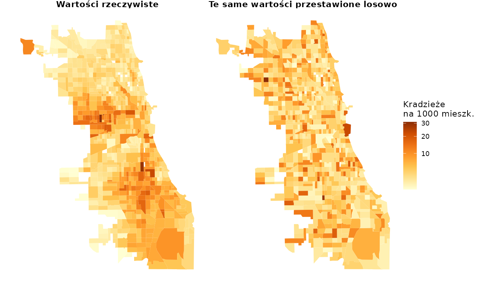
Obie mapy przedstawiają ten sam zbiór liczb — identyczne minimum, maksimum, średnią i rozkład. Różnią się wyłącznie tym, którym obszarom przypisano które wartości. Na mapie po lewej wartości wysokie sąsiadują z wysokimi i tworzą zwarte obszary; na mapie po prawej rozkładają się bez żadnego porządku. Analiza nieprzestrzenna nie odróżni tych dwóch sytuacji, bo pomija lokalizację. Odróżniają je dopiero miary opisane w tym rozdziale.
Pojęcia podstawowe
Autokorelacja przestrzenna
Autokorelacja przestrzenna (ang. spatial autocorrelation) określa zależność przestrzenną, która może być obserwowana jako zgrupowania (klastry) podobnych wartości albo jako systematyczny wzorzec przestrzenny (ang. spatial pattern). Oznacza, że obserwacje bliskie geograficznie są bardziej do siebie podobne niż obserwacje odległe.
Pomiar autokorelacji wymaga dwóch rzeczy jednocześnie:
- miary podobieństwa wartości — o ile wartości w dwóch obszarach różnią się od siebie,
- definicji sąsiedztwa w przestrzeni geograficznej — które obszary uznajemy za sąsiadujące.
Druga z nich nie wynika z danych i jest decyzją analityka; poświęcona jest jej następna sekcja.
Losowość przestrzenna
Brak autokorelacji przestrzennej oznacza losowość przestrzenną (ang. spatial randomness): wartości obserwowane w danym obszarze nie zależą od wartości obserwowanych w obszarach sąsiednich, a obserwowany wzorzec przestrzenny jest równie prawdopodobny jak każdy inny.
Losowość przestrzenna jest hipotezą zerową w analizie autokorelacji. Nie szukamy jej w danych — przeciwnie, celem analizy jest jej odrzucenie, bo odrzucenie hipotezy zerowej oznacza, że w danych istnieje jakiś wzorzec.
Obie nazwy opisują hipotezę zerową, ale dotyczą różnych rzeczy. Całkowita przestrzenna przypadkowość (CSR), omawiana w części o danych punktowych, jest modelem rozmieszczenia lokalizacji zdarzeń: każde miejsce jest jednakowo prawdopodobne. Losowość przestrzenna w analizie danych obszarowych dotyczy wartości przypisanych do ustalonych jednostek: jednostki się nie zmieniają, zmienia się tylko to, która wartość trafia do której. Dlatego hipotezę tę weryfikuje się przestawianiem wartości między jednostkami, a nie losowaniem nowych lokalizacji.
Autokorelacja dodatnia i ujemna
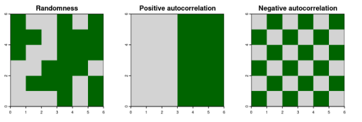
Autokorelacja dodatnia oznacza, że w sąsiadujących obszarach obserwuje się podobne wartości: wysokie otoczone wysokimi albo niskie otoczone niskimi. Obszary sąsiedzkie są wtedy mniej zróżnicowane, niż wynikałoby to z losowego rozmieszczenia wartości.
Autokorelacja ujemna oznacza, że wartości sąsiednie różnią się od siebie — na przykład niskie wartości otoczone wysokimi. Obszary sąsiedzkie są wtedy bardziej zróżnicowane, niż wynikałoby z losowego rozmieszczenia. Skrajnym przypadkiem jest efekt szachownicy, widoczny na prawym panelu ryciny.
Zmienna opóźniona przestrzennie
Większość miar autokorelacji zestawia wartość w obszarze z wartościami w jego otoczeniu. Otoczenie podsumowuje zmienna opóźniona przestrzennie (ang. spatial lag) — ważona suma wartości sąsiadów:
\[\tilde{x}_i = \sum_{j} w_{ij}\, x_j\]
gdzie \(w_{ij}\) to waga przypisana parze obszarów \(i\) oraz \(j\), a \(x_j\) — wartość w obszarze \(j\). Przy wagach standaryzowanych wierszami (opisanych niżej) wagi w każdym wierszu sumują się do jedynki, więc zmienna opóźniona przestrzennie jest po prostu średnią wartością u sąsiadów.
Sąsiedztwo obszarów
Sąsiadów przestrzennych można definiować na kilka sposobów, a wybór definicji zmienia wynik każdej miary liczonej dalej.
Kryterium wspólnej granicy
Kryterium wspólnej granicy (ang. adjacency) zakłada, że sąsiadami są obszary mające wspólną granicę. Granicę tę wyznacza się jedną z dwóch reguł:
- reguła rook — sąsiadami są obszary stykające się odcinkiem granicy,
- reguła queen — sąsiadami są obszary stykające się odcinkiem granicy albo choćby jednym punktem (narożnikiem).
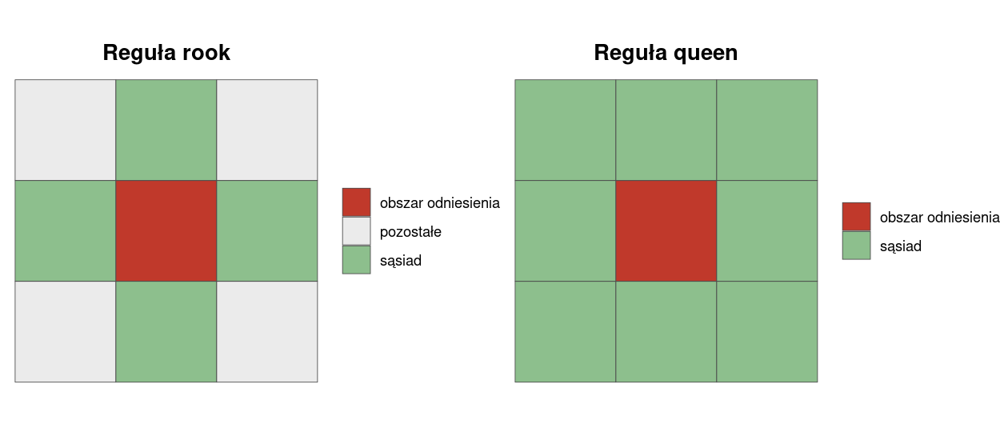
Nazwy pochodzą od ruchów figur szachowych. Dla komórki środkowej siatki 3×3 reguła rook wskazuje 4 sąsiadów, a reguła queen — 8. Różnica dotyczy wyłącznie obszarów stykających się narożnikiem, więc w podziałach administracyjnych, gdzie styk w jednym punkcie zdarza się rzadko, obie reguły dają często ten sam wynik.
Kryterium odległości
Kryterium odległości zakłada, że sąsiadami są obszary leżące w pewnej odległości od siebie, niekoniecznie stykające się granicami. Odległość mierzy się między centroidami obszarów. Wyróżnia się trzy warianty:
- sąsiedzi w promieniu d — sąsiadem jest obszar, którego centroid leży nie dalej niż d od centroidu obszaru odniesienia,
- k najbliższych sąsiadów (ang. k nearest neighbours, knn) — sąsiadami jest k obszarów o centroidach położonych najbliżej. Kryterium to pierwotnie dotyczy danych punktowych, więc dla danych obszarowych trzeba najpierw wyznaczyć centroidy; na to, które obszary trafią do zbioru sąsiadów, wpływa wielkość i kształt regionów,
- odległość odwrotna (\(1/d\)) — sąsiadami są wszystkie obszary, ale z wagą malejącą wraz z odległością.
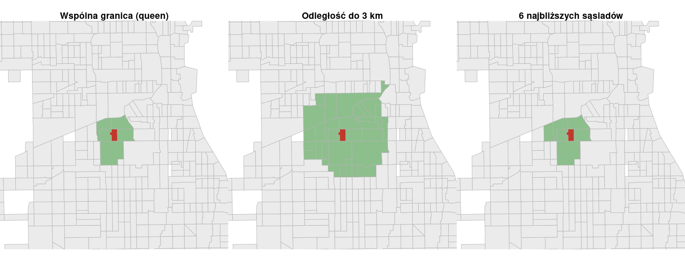
Dla obszaru zaznaczonego na czerwono reguła queen wskazuje 5 sąsiadów, kryterium odległości do 3 km — 32, a kryterium 6 najbliższych sąsiadów — z definicji 6. Trzy kryteria dają więc trzy różne zbiory sąsiadów dla tego samego obszaru, a każdy z nich prowadzi do innej wartości miary autokorelacji.
Dwa kryteria różnią się przy tym własnością istotną praktycznie. Sąsiedztwo wyznaczone wspólną granicą i promieniem d jest symetryczne: jeśli obszar A jest sąsiadem B, to B jest sąsiadem A. Sąsiedztwo k najbliższych sąsiadów symetryczne nie jest — obszar duży może być jednym z k najbliższych sąsiadów obszaru małego, podczas gdy w drugą stronę zależność nie zachodzi.
Macierz wag przestrzennych
Macierz wag przestrzennych to tabela \(N \times N\), w której przechowywane są informacje o występowaniu oraz o sile zależności przestrzennych między obiektami. Każdy element reprezentuje powiązanie między parą jednostek, a przekątna jest zerowa — jednostka nie jest sąsiadem samej siebie. Macierz wag stanowi podstawę większości technik analizy danych obszarowych.
Powstaje w dwóch krokach:
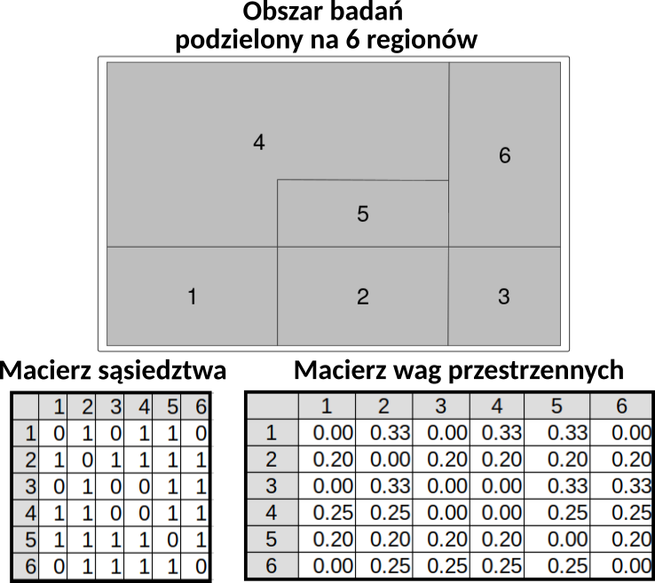
Macierz sąsiedztwa
Mając definicję sąsiedztwa, buduje się macierz sąsiedztwa — tabelę, w której zapisana jest informacja o tym, czy obszary ze sobą sąsiadują. Najprostszą jej formą jest macierz binarna:
\[ m_{ij} = \begin{cases} 1 & \text{obszar } i \text{ jest sąsiadem obszaru } j \\ 0 & \text{obszar } i \text{ nie jest sąsiadem obszaru } j \\ 0 & \text{elementy na przekątnej} \end{cases} \]
Standaryzacja
W kolejnym kroku macierz sąsiedztwa standaryzuje się, aby otrzymać wagi. Najczęściej stosuje się standaryzację wierszami do jedynki, tak aby suma wag w każdym wierszu wynosiła 1:
\[w_{ij} = \frac{m_{ij}}{w_{i}}\]
gdzie \(m_{ij}\) to wartość macierzy sąsiedztwa dla obszarów \(i\) oraz \(j\), a \(w_i\) — suma \(i\)-tego wiersza, czyli liczba sąsiadów obszaru \(i\).
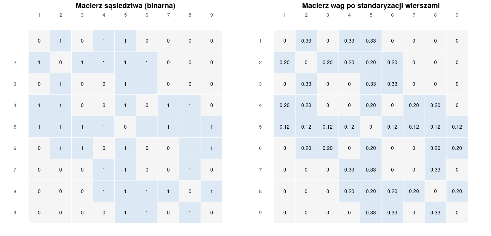
Standaryzacja ma konsekwencję, o której trzeba pamiętać przy interpretacji: obszar mający 2 sąsiadów przypisuje każdemu z nich wagę 1/2, a obszar mający 8 sąsiadów — po 1/8. Pojedynczy sąsiad znaczy tym więcej, im mniej sąsiadów ma dany obszar. W zbiorze z hrabstwa Cook liczba sąsiadów waha się od 1 do 17 przy średniej 6,5, więc różnice w wadze pojedynczego sąsiada są znaczne.
Miary autokorelacji przestrzennej
Miary autokorelacji służą do testowania, czy autokorelacja przestrzenna w danych występuje. Dzielą się na dwie grupy:
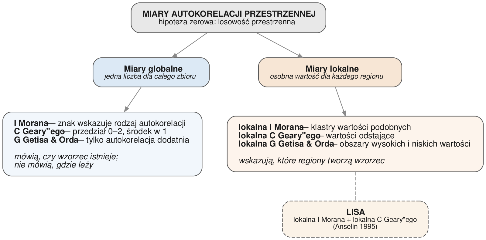
Miary globalne to jednoliczbowe wskaźniki autokorelacji przestrzennej, czyli ogólnego podobieństwa regionów. Informują, że wartości nie są w przestrzeni rozmieszczone losowo — czyli że istnieją przesłanki, by sądzić, że podobne wartości grupują się w przestrzeni. Nie informują, gdzie te zgrupowania leżą.
Miary lokalne obliczane są osobno dla każdego regionu. Pozwalają odpowiedzieć na pytania: czy dany region jest otoczony regionami o wysokich czy o niskich wartościach, oraz czy jest podobny, czy różny względem swoich sąsiadów. Dzięki temu umożliwiają identyfikację klastrów.
Globalna I Morana
Najstarsza miara przestrzenna, wprowadzona przez Moran (1950):
\[I = \frac{n}{\sum_{i}\sum_{j} w_{ij}} \cdot \frac{\sum_{i}\sum_{j} w_{ij}\,(x_i - \bar{x})(x_j - \bar{x})}{\sum_{i}(x_i - \bar{x})^2}\]
gdzie \(n\) to liczba obszarów, \(x_i\) — wartość w obszarze \(i\), \(\bar{x}\) — średnia wartość w zbiorze, a \(w_{ij}\) — waga pary obszarów. Licznik sumuje iloczyny odchyleń od średniej dla par sąsiadów: jest dodatni, gdy sąsiedzi odchylają się w tę samą stronę, a ujemny, gdy w przeciwne.
Hipotezy: \(H_0\) — brak autokorelacji przestrzennej; \(H_1\) — autokorelacja przestrzenna. Interpretacja:
- \(I = 0\) — wartości rozłożone losowo,
- \(I > 0\) — autokorelacja dodatnia; sąsiadujące wartości są podobne, czyli wartości podobne stykają się częściej, niż wynikałoby to z przypadku,
- \(I < 0\) — autokorelacja ujemna; sąsiadujące wartości są różne.
Dla współczynnika kradzieży w hrabstwie Cook \(I\) = 0,578, czyli autokorelacja wyraźnie dodatnia.
Sama wartość statystyki nie rozstrzyga, czy odnotowana zależność nie jest dziełem przypadku. Poza policzeniem statystyki należy wykonać test określający jej istotność.
Globalna C Geary’ego
Statystyka C Geary’ego porównuje wartości sąsiadów bezpośrednio, przez kwadrat ich różnicy:
\[C = \frac{n-1}{2\sum_{i}\sum_{j} w_{ij}} \cdot \frac{\sum_{i}\sum_{j} w_{ij}\,(x_i - x_j)^2}{\sum_{i}(x_i - \bar{x})^2}\]
Licznik jest sumą kwadratów różnic między sąsiadami, więc statystyka jest zawsze dodatnia i mieści się w przedziale od 0 do 2:
- 0–1 — autokorelacja dodatnia; sąsiadujące wartości są podobne (różnice małe),
- 1 — brak autokorelacji przestrzennej; sąsiadujące wartości rozłożone losowo,
- 1–2 — autokorelacja ujemna; sąsiadujące wartości nie są podobne (różnice duże).
Dla danych z hrabstwa Cook \(C\) = 0,462, co prowadzi do tego samego wniosku co I Morana: autokorelacja dodatnia. Zwróć uwagę na przeciwny kierunek skali: w przypadku I Morana autokorelację dodatnią wskazuje wartość wysoka, a w przypadku C Geary’ego — niska.
Globalna G Getisa & Orda
Statystyka G Getisa & Orda jest udziałem iloczynów wartości par sąsiadujących obszarów w sumie iloczynów wszystkich par:
\[G = \frac{\sum_{i}\sum_{j} w_{ij}\, x_i x_j}{\sum_{i}\sum_{j} x_i x_j}, \qquad j \neq i\]
Licznik obejmuje wyłącznie pary sąsiadów, bo dla par niesąsiadujących \(w_{ij} = 0\). Jeśli wysokie wartości sąsiadują ze sobą, iloczyny w liczniku są duże i statystyka rośnie. Konstrukcja ta ma dwie konsekwencje. Po pierwsze, wszystkie wartości \(x_i\) muszą być nieujemne — inaczej iloczyny mogłyby się znosić. Po drugie, statystyka wymaga wag binarnych, nie standaryzowanych wierszami.
Dla danych z hrabstwa Cook \(G\) = 0,0135 przy wartości oczekiwanej 0,0082. Sama wartość \(G\) nie ma interpretacji w oderwaniu od wartości oczekiwanej, dlatego wynik testu podaje się jako statystykę standaryzowaną: tutaj 25,3 przy \(p\) < 0,001.
Test weryfikuje hipotezę zerową o braku autokorelacji przestrzennej przeciwko hipotezie alternatywnej o autokorelacji dodatniej. Oznacza to, że statystyka nie mierzy autokorelacji ujemnej — rozkład szachownicowy pozostanie dla niej nieodróżnialny od losowego.
Testowanie istotności
Istotność statystyki globalnej można ocenić testem asymptotycznym albo testem opartym na symulacji. W tym drugim wielokrotnie przestawia się wartości między obszarami — zachowując sam podział na jednostki — i dla każdego takiego przestawienia liczy statystykę. Otrzymany rozkład pokazuje, jakich wartości należałoby się spodziewać, gdyby prawdziwa była hipoteza o losowości przestrzennej.
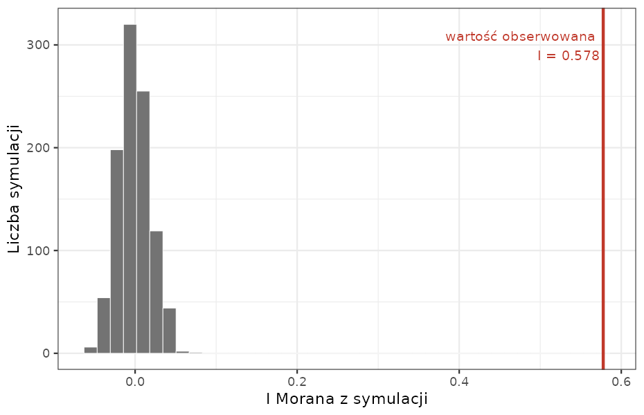
Dla danych z hrabstwa Cook wartości symulowane mieszczą się w przedziale od −0,055 do 0,070, czyli skupiają się wokół zera, a wartość obserwowana wynosi 0,578 i leży daleko poza tym przedziałem. Hipotezę o losowości przestrzennej odrzucamy.
Istotność wyraża się pseudo p-value, obliczaną ze wzoru:
\[p = \frac{N_{extreme} + 1}{N + 1}\]
gdzie \(N_{extreme}\) to liczba symulowanych wartości statystyki skrajniejszych od wartości obserwowanej, a \(N\) — liczba symulacji. Przy 999 symulacjach i żadnej wartości skrajniejszej otrzymujemy \(p\) = 1/1000 = 0,001 — i jest to najmniejsza wartość osiągalna przy tej liczbie symulacji. Liczba symulacji wyznacza więc dokładność wyniku.
Lokalna I Morana
Lokalna statystyka I Morana obliczana jest dla każdego obszaru osobno:
\[I_i = \frac{x_i - \bar{x}}{m_2} \sum_{j} w_{ij}\,(x_j - \bar{x}) \qquad \text{gdzie} \qquad m_2 = \frac{\sum_{i}(x_i - \bar{x})^2}{n}\]
Jest to iloczyn odchylenia wartości w obszarze \(i\) od średniej oraz sumy odchyleń jego sąsiadów, odniesiony do wariancji zbioru. Mierzy, czy region jest otoczony przez regiony o podobnych, czy o różnych wartościach — w stosunku do losowego rozmieszczenia wartości w przestrzeni:
- \(I_i > 0\) — grupowanie wartości podobnych (wyższych albo niższych od średniej),
- \(I_i < 0\) — połączenie wartości różnych, na przykład wysokiej otoczonej niskimi.
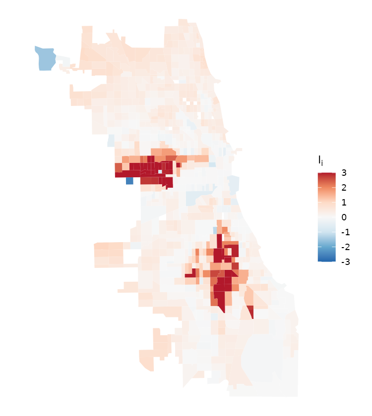
Wartości wahają się od −2,59 do 11,74. Czerwone obszary to te, które wraz z sąsiadami tworzą zgrupowania wartości podobnych; niebieskie — obszary odstające od swojego otoczenia. Mapa ta pokazuje wartość statystyki, a nie jej istotność; podział na klastry wymaga dodatkowego kroku, opisanego niżej.
Lokalna C Geary’ego
Lokalna statystyka C Geary’ego pokazuje średnie różnice między obszarem a jego sąsiadami, co pomaga znaleźć wartości odstające:
\[c_i = \sum_{j} w_{ij}\,(z_i - z_j)^2\]
gdzie \(z_i\) to wartość standaryzowana w obszarze \(i\). Statystyka jest sumą kwadratów różnic, więc nie może przyjmować wartości ujemnych — dla danych z hrabstwa Cook mieści się w przedziale od 0,00 do 24,81. Interpretacja nie opiera się więc na znaku:
- niskie wartości \(c_i\) wskazują na autokorelację dodatnią, czyli podobieństwo obszaru do sąsiadów,
- wysokie wartości wskazują na autokorelację ujemną, czyli na obszar odstający od otoczenia.
Wniosek o istotności opiera się na pseudo p-value wyznaczonej z permutacji, nie na samej wartości statystyki. O tym, czy wartość istotna leży po stronie „niskiej”, czy „wysokiej”, rozstrzyga jej położenie względem rozkładu statystyki w zbiorze.
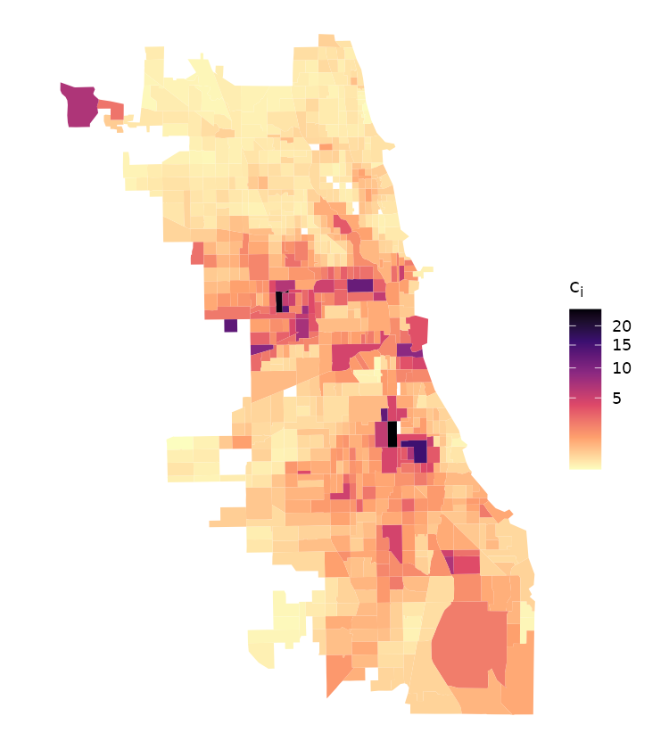
Rozkład wartości jest silnie asymetryczny: mediana wynosi 0,31, a maksimum 24,81. Obszary jasne to te, które niewiele różnią się od swoich sąsiadów; pojedyncze obszary ciemne odstają od otoczenia najmocniej i to one są kandydatami na wartości odstające przestrzennie. Test oparty na permutacjach wskazał 323 obszary istotne przy poziomie 0,05 — z czego 203 o wartości \(c_i\) poniżej mediany zbioru (podobieństwo do sąsiadów) i 120 powyżej niej (odstawanie od sąsiadów).
Zwróć uwagę na różnicę w stosunku do poprzednich dwóch map: lokalna I Morana i lokalna G mają skalę dwukierunkową, bo ich znak niesie informację. Tutaj skala jest jednokierunkowa, bo wszystkie wartości są dodatnie — to bezpośrednia konsekwencja wzoru, w którym sumuje się kwadraty różnic.
Lokalna G Getisa & Orda
Lokalna statystyka G Getisa & Orda służy do identyfikacji lokalnych koncentracji przestrzennych, które nie ujawniają się w analizie globalnej. W postaci podstawowej jest to udział wartości sąsiadów w sumie wartości w całym zbiorze:
\[G_i = \frac{\sum_{j} w_{ij}\, x_j}{\sum_{j} x_j}\]
Tak zdefiniowana statystyka jest zawsze dodatnia, więc jej wartość sama w sobie nie ma interpretacji. Funkcje liczące ją w R zwracają wartość standaryzowaną, czyli odchylenie od wartości oczekiwanej wyrażone w jednostkach odchylenia standardowego, i dopiero dla niej obowiązują progi:
- \(G_i > 0\) — zgrupowanie regionów o wysokich wartościach; obszar i jego sąsiedzi mają wartości wysokie. Jest to obszar wysokich wartości (ang. hot spot),
- \(G_i < 0\) — zgrupowanie regionów o niskich wartościach, czyli obszar niskich wartości (ang. cold spot).
Jako wysokie uznaje się wartości wyższe od średniej, a jako niskie — niższe od średniej. Podobnie jak miara globalna, lokalna statystyka G nie mierzy autokorelacji ujemnej.
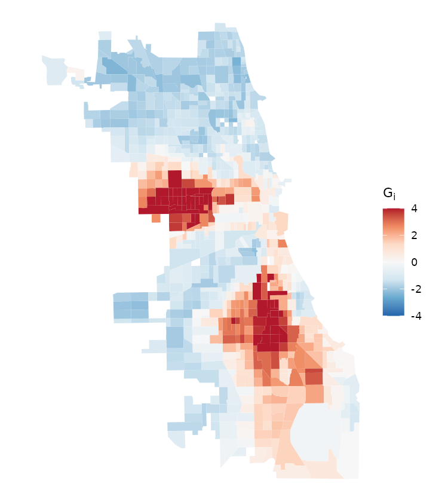
Dla danych z hrabstwa Cook wartości wahają się od −2,47 do 8,11, a 462 z 788 obszarów ma wartość ujemną — co potwierdza, że funkcja zwraca wielkość standaryzowaną, a nie surowy iloraz.
Zestawienie
| Statystyka | Autokorelacja ujemna | Brak autokorelacji | Autokorelacja dodatnia |
|---|---|---|---|
| I Morana oraz lokalna \(I_i\) | \(I < 0\) | \(I = 0\) | \(I > 0\) |
| C Geary’ego (globalna) | \(C > 1\) | \(C = 1\) | \(C < 1\) |
| lokalna \(C_i\) | wartości wysokie | — | wartości niskie |
| G Getisa & Orda oraz lokalna \(G_i\) | nie dotyczy | \(G_i = 0\) | \(G_i > 0\) — obszar wysokich wartości; \(G_i < 0\) — obszar niskich wartości |
LISA (ang. local indicators of spatial association, lokalne wskaźniki związków przestrzennych) to nazwa zbiorcza dwóch statystyk lokalnych zaproponowanych przez Anselin (1995): lokalnej I Morana, służącej do identyfikacji klastrów wartości wysokich i niskich, oraz lokalnej C Geary’ego, pokazującej średnie różnice między obszarem a sąsiadami.
Wykres rozrzutu Morana
Wykres rozrzutu Morana przedstawia zależność między wartościami zmiennej (oś pozioma) a wartościami zmiennej opóźnionej przestrzennie (oś pionowa). Linie przerywane wyznaczają średnie obu zmiennych; po standaryzacji obie wynoszą zero i dzielą wykres na cztery ćwiartki.
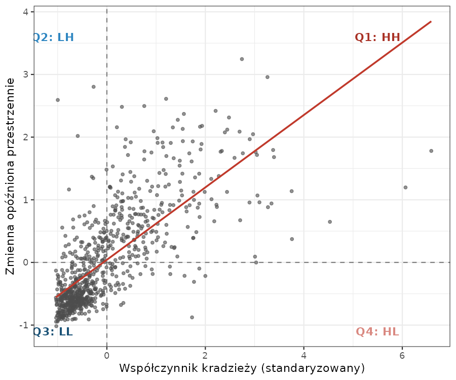
Nachylenie linii regresji na wykresie rozrzutu Morana jest tożsame z globalną statystyką I Morana — dla tych danych wynosi 0,578, czyli dokładnie tyle, ile podaje statystyka globalna. Wykres jest więc graficzną reprezentacją tej statystyki.
Cztery ćwiartki (ang. quadrant) opisują cztery możliwe relacje między obszarem a jego sąsiadami:
| Wartości niskie w regionie \(i\) (L) | Wartości wysokie w regionie \(i\) (H) | |
|---|---|---|
| Wartości wysokie u sąsiadów (H) | ćwiartka LH (Q2) — autokorelacja ujemna | ćwiartka HH (Q1) — autokorelacja dodatnia |
| Wartości niskie u sąsiadów (L) | ćwiartka LL (Q3) — autokorelacja dodatnia | ćwiartka HL (Q4) — autokorelacja ujemna |
Ćwiartka Q1 (HH) obejmuje obszary o wartościach wyższych od średniej otoczone obszarami również o wartościach wyższych od średniej; Q3 (LL) — obszary o wartościach niższych od średniej otoczone podobnymi. Obie wskazują autokorelację dodatnią. Ćwiartki Q2 (LH) i Q4 (HL) przedstawiają autokorelację ujemną: obszar odstaje od swojego otoczenia.
Identyfikacja klastrów
Przynależność do ćwiartki sama w sobie nie wystarcza do wskazania klastra — każdy obszar leży w którejś z czterech ćwiartek. Klastry wydziela się wyłącznie z obszarów, dla których lokalna statystyka okazała się istotna statystycznie; pozostałe pozostają nieprzypisane.
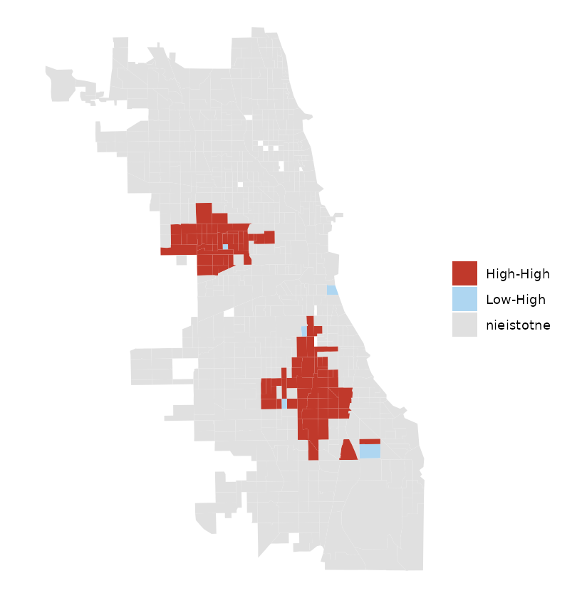
Statystyka lokalna liczona dla 788 obszarów to 788 testów wykonanych naraz, dlatego poziom istotności skorygowano metodą FDR (ang. false discovery rate). Bez tej korekty klastrów jest więcej: 179 obszarów zamiast 97. Korekta jest decyzją analityka i podaje się ją razem z wynikiem — rozdział 7 Miary autokorelacji danych obszarowych pokazuje oba warianty na innym zbiorze.
Dla współczynnika kradzieży w hrabstwie Cook po korekcie istotnych okazało się 97 obszarów z 788: 92 należą do klastra High-High, a 5 do typu Low-High. Pozostałe 691 obszarów nie różni się istotnie od tego, czego można oczekiwać przy losowym rozmieszczeniu wartości. Mapa pokazuje dwa zwarte obszary wysokich wartości — zachodnią i południową część Chicago — czyli dokładnie tę informację, której statystyka globalna dostarczyć nie może.
Problem zmiennych jednostek odniesienia
Dane obszarowe powstają przez agregację, a sposób tej agregacji wpływa na wynik analizy. Zjawisko to nosi nazwę problemu zmiennych jednostek odniesienia (ang. modifiable areal unit problem, MAUP) i łączy dwa osobne problemy.
Problem skali (ang. scale problem) to zmiana informacji wywołana poziomem agregacji przestrzennej. Ta sama zmienna analizowana na poziomie gmin, powiatów i województw daje różne wyniki.
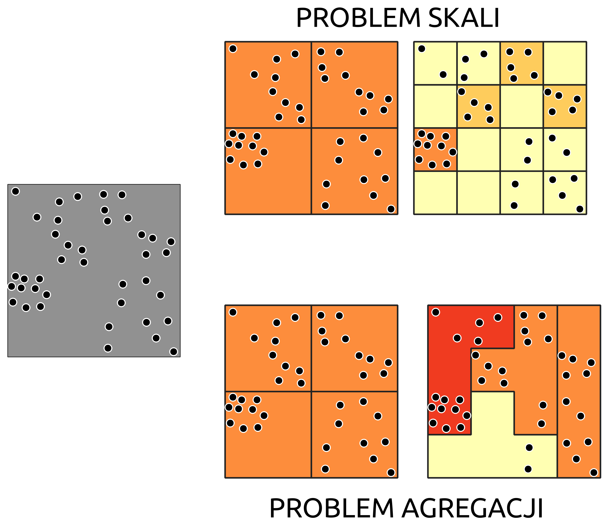
Problem agregacji (ang. zonation problem) wynika ze sposobu podziału przestrzeni na strefy. Wyniki analizy mogą się różnić w zależności od tego, jak poprowadzono granice jednostek — nawet przy zachowaniu tej samej skali, czyli tej samej liczby i wielkości jednostek.
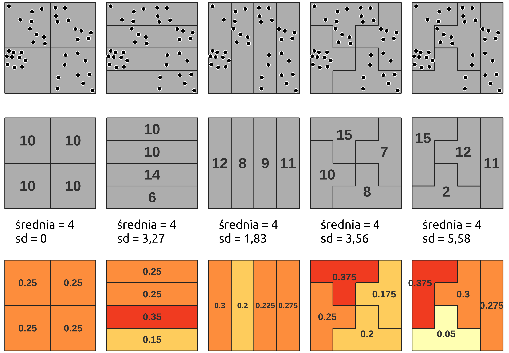
Konsekwencja dla wniosków jest taka, że wartość miary autokorelacji opisuje zmienną w danym podziale, a nie samą zmienną. Porównywanie wartości statystyki policzonych na różnych podziałach nie ma uzasadnienia, a wnioski formułuje się zawsze z zaznaczeniem, na jakich jednostkach pracowano.
Powiązanie z ćwiczeniami
| Zagadnienie | Funkcje | Pakiet | Gdzie wykonujesz |
|---|---|---|---|
| sąsiedztwo wg wspólnej granicy | poly2nb(queen =) |
spdep |
6 Określanie sąsiedztwa danych obszarowych, 7 Miary autokorelacji danych obszarowych |
| sąsiedztwo wg odległości i k najbliższych sąsiadów | dnearneigh(), knearneigh(), knn2nb() |
spdep |
6 Określanie sąsiedztwa danych obszarowych |
| macierz wag przestrzennych | nb2listw(style =), nb2mat(), listw2mat() |
spdep |
6 Określanie sąsiedztwa danych obszarowych, 7 Miary autokorelacji danych obszarowych |
| zmienna opóźniona przestrzennie | lag.listw() |
spdep |
7 Miary autokorelacji danych obszarowych |
| miary globalne | moran.test(), moran.mc(), geary.test(), globalG.test() |
spdep |
7 Miary autokorelacji danych obszarowych |
| miary lokalne | localmoran(), localC_perm(), localG_perm() |
spdep |
7 Miary autokorelacji danych obszarowych |
| wykres rozrzutu i klastry | moran.plot(), hotspot() |
spdep |
7 Miary autokorelacji danych obszarowych |
Opis pakietów wraz z odnośnikami do dokumentacji zawiera Załącznik A — Pakiety, a pełne zestawienie funkcji — Załącznik B — Funkcje.
Literatura
- Gimond (b.d.) — autokorelacja przestrzenna, macierz wag, statystyka I Morana.
- Moraga (2023) — miary autokorelacji przestrzennej, miary lokalne.
- Anselin (b.d.) — dokumentacja GeoDa: lokalna I Morana, lokalna C Geary’ego, statystyki Getisa & Orda.
- Kopczewska (2023) — przegląd miar autokorelacji wraz z ich realizacją w R.
- Lovelace, Nowosad, i Muenchow (2025) — praca z danymi przestrzennymi w R.
Pytania kontrolne
- Czym jest autokorelacja przestrzenna i co oznacza jej brak?
Autokorelacja przestrzenna to zależność, w której obserwacje bliskie geograficznie są bardziej do siebie podobne niż obserwacje odległe; obserwuje się ją jako zgrupowania podobnych wartości albo systematyczny wzorzec przestrzenny. Jej brak to losowość przestrzenna: wartości w danym obszarze nie zależą od wartości u sąsiadów, a obserwowany wzorzec jest równie prawdopodobny jak każdy inny. Losowość przestrzenna jest hipotezą zerową analizy — celem jest jej odrzucenie.
- Czym różni się autokorelacja dodatnia od ujemnej i jak wygląda każda z nich na mapie?
Przy autokorelacji dodatniej sąsiadujące obszary mają wartości podobne — wysokie otoczone wysokimi, niskie otoczone niskimi — więc obszary sąsiedzkie są mniej zróżnicowane, niż wynikałoby to z losowego rozmieszczenia wartości. Na mapie widać zwarte obszary o zbliżonych wartościach.
Przy autokorelacji ujemnej wartości sąsiednie różnią się od siebie, więc obszary sąsiedzkie są bardziej zróżnicowane niż przy rozmieszczeniu losowym. Skrajnym przypadkiem jest efekt szachownicy: wartości wysokie i niskie na przemian.
- Jak określić, czy dwa regiony ze sobą sąsiadują? Wymień kryteria i podaj konsekwencje wyboru.
Dwa kryteria główne: wspólnej granicy (reguła rook — styk odcinkiem granicy; reguła queen — styk odcinkiem albo choćby narożnikiem) oraz odległości mierzonej między centroidami (sąsiedzi w promieniu d, k najbliższych sąsiadów, odległość odwrotna).
Wybór zmienia wynik każdej miary liczonej dalej: dla przykładowego obszaru spisowego reguła queen wskazała 5 sąsiadów, kryterium odległości do 3 km — 32, a kryterium 6 najbliższych sąsiadów — 6. Dodatkowo sąsiedztwo k najbliższych sąsiadów nie jest symetryczne: A może być sąsiadem B, podczas gdy B nie jest sąsiadem A.
- Czym jest macierz sąsiedztwa i co oznaczają jej elementy?
To tabela, w której zapisana jest informacja o występowaniu relacji sąsiedztwa między obszarami. W postaci binarnej element \(m_{ij}\) wynosi 1, gdy obszar \(i\) jest sąsiadem obszaru \(j\), i 0, gdy nie jest. Elementy na przekątnej są zerowe, ponieważ obszar nie jest sąsiadem samego siebie.
- Po co standaryzuje się macierz sąsiedztwa i co zmienia się po standaryzacji?
Standaryzacja zamienia informację o samym występowaniu sąsiedztwa na wagi, czyli miarę siły powiązania. Najczęściej stosuje się standaryzację wierszami do jedynki: \(w_{ij} = m_{ij}/w_i\), gdzie \(w_i\) to liczba sąsiadów obszaru \(i\). Po standaryzacji suma wag w każdym wierszu wynosi 1, a zmienna opóźniona przestrzennie staje się po prostu średnią wartością u sąsiadów.
Konsekwencja: obszar mający 2 sąsiadów przypisuje każdemu wagę 1/2, a obszar mający 8 sąsiadów — po 1/8. Pojedynczy sąsiad znaczy tym więcej, im mniej sąsiadów ma dany obszar.
- Czym różnią się miary globalne od lokalnych i na jakie pytanie odpowiada każda grupa?
Miary globalne sprowadzają cały zbiór do jednej liczby i odpowiadają na pytanie, czy wzorzec przestrzenny w ogóle istnieje. Nie wskazują, gdzie leżą zgrupowania podobnych wartości.
Miary lokalne liczone są osobno dla każdego regionu i odpowiadają na pytanie, czy dany region jest otoczony regionami o wartościach wysokich czy niskich oraz czy jest do nich podobny. Pozwalają wskazać klastry. Obie grupy są potrzebne: miara globalna bliska zeru nie wyklucza istnienia lokalnych klastrów, które wzajemnie się znoszą.
- Czym jest zmienna opóźniona przestrzennie i jaką rolę pełni na wykresie rozrzutu Morana?
To ważona suma wartości u sąsiadów, \(\tilde{x}_i = \sum_j w_{ij} x_j\). Przy wagach standaryzowanych wierszami jest to średnia wartość u sąsiadów.
Na wykresie rozrzutu Morana tworzy oś pionową, podczas gdy oś pozioma to wartość zmiennej w obszarze. Dzięki temu wykres zestawia obszar z jego otoczeniem, a nachylenie linii regresji równa się globalnej statystyce I Morana.
- Globalna statystyka C Geary’ego dla pewnego zbioru wyniosła 0,6. Co to oznacza?
Autokorelację dodatnią: sąsiadujące wartości są podobne. Statystyka C Geary’ego mieści się w przedziale od 0 do 2, przy czym przedział 0–1 oznacza autokorelację dodatnią, wartość 1 — brak autokorelacji, a przedział 1–2 — autokorelację ujemną.
Zwróć uwagę na przeciwny kierunek skali niż w przypadku I Morana: tam autokorelację dodatnią wskazuje wartość wysoka, tutaj — niska.
- Jak czyta się wynik testu istotności opartego na symulacji i czym jest pseudo p-value?
W teście wielokrotnie przestawia się wartości między obszarami — zachowując sam podział na jednostki — i dla każdego przestawienia liczy statystykę. Otrzymany rozkład pokazuje, jakich wartości należałoby oczekiwać przy prawdziwej hipotezie o losowości przestrzennej. Wniosek wyciąga się z położenia wartości obserwowanej względem tego rozkładu.
Pseudo p-value oblicza się ze wzoru \(p = (N_{extreme} + 1)/(N + 1)\), gdzie \(N_{extreme}\) to liczba symulowanych wartości skrajniejszych od obserwowanej, a \(N\) — liczba symulacji. Przy 999 symulacjach najmniejsza osiągalna wartość to 0,001; liczba symulacji wyznacza więc dokładność wyniku.
- Statystyka I Morana wyniosła 0,45. Czy to wystarczy, by stwierdzić autokorelację przestrzenną?
Nie. Sama wartość statystyki nie rozstrzyga, czy odnotowana zależność nie jest dziełem przypadku — nawet wysokie wartości nie świadczą o tym, że statystyka jest istotna statystycznie. Poza policzeniem wartości należy wykonać test istotności: asymptotyczny albo oparty na symulacji. Dopiero wynik testu uprawnia do odrzucenia hipotezy o losowości przestrzennej.
- Na czym polega problem zmiennych jednostek odniesienia i co z niego wynika dla wniosków z analizy?
MAUP łączy dwa problemy. Problem skali to zmiana wyniku wraz z poziomem agregacji: ta sama zmienna analizowana na poziomie gmin, powiatów i województw daje różne wyniki. Problem agregacji to zmiana wyniku wraz ze sposobem poprowadzenia granic jednostek, nawet przy zachowaniu tej samej liczby i wielkości jednostek.
Wniosek: wartość miary autokorelacji opisuje zmienną w danym podziale, a nie samą zmienną. Porównywanie wartości policzonych na różnych podziałach nie ma uzasadnienia, a wnioski formułuje się zawsze z zaznaczeniem, na jakich jednostkach pracowano.
- Autokorelacja przestrzenna oznacza, że obserwacje bliskie geograficznie są bardziej do siebie podobne niż odległe; jej brak to losowość przestrzenna, przyjmowana jako hipoteza zerowa.
- Autokorelacja dodatnia oznacza, że obszary sąsiednie są mniej zróżnicowane, niż wynikałoby z losowego rozmieszczenia wartości; ujemna — że są bardziej zróżnicowane (efekt szachownicy).
- Pomiar autokorelacji wymaga dwóch rzeczy: miary podobieństwa wartości i definicji sąsiedztwa w przestrzeni geograficznej.
- Sąsiedztwo wyznacza się kryterium wspólnej granicy (reguła rook albo queen) albo kryterium odległości (promień d, k najbliższych sąsiadów, odległość odwrotna); wybór kryterium zmienia wynik.
- Macierz wag przestrzennych powstaje w dwóch krokach: macierz sąsiedztwa, następnie standaryzacja — najczęściej wierszami do jedynki, czyli \(w_{ij} = m_{ij}/w_i\).
- Miary globalne (I Morana, C Geary’ego, G Getisa & Orda) sprowadzają zbiór do jednej liczby i nie wskazują, gdzie leżą zgrupowania; miary lokalne (lokalna \(I_i\), \(C_i\), \(G_i\)) liczone są dla każdego regionu i pozwalają wskazać klastry.
- Progi interpretacyjne: \(I\) i \(I_i\) dodatnie oznaczają autokorelację dodatnią; \(C\) globalne mieści się w przedziale 0–2, przy czym 0–1 to autokorelacja dodatnia, a 1 brak; \(G\) i \(G_i\) mierzą wyłącznie autokorelację dodatnią. Lokalna \(C_i\) jest nieujemna — czyta się ją względem wartości oczekiwanej z permutacji, nie względem zera.
- Klastry wydziela się wyłącznie z obszarów, dla których statystyka lokalna okazała się istotna statystycznie.
- Wynik analizy zależy od podziału obszaru na jednostki — problem zmiennych jednostek odniesienia (MAUP) łączy problem skali agregacji i problem sposobu podziału na strefy.